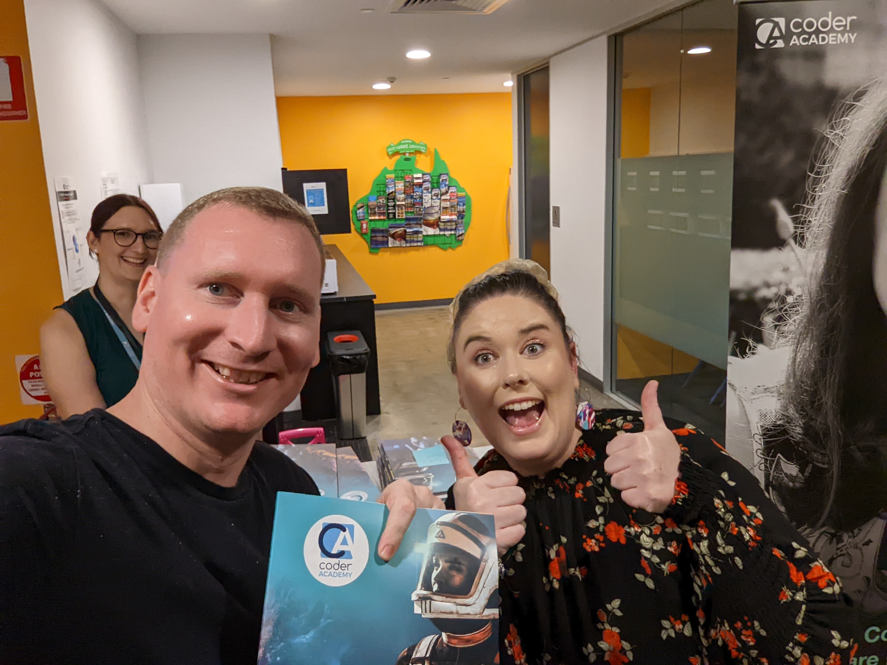

Matthew Kennedy

Objective
Transition out of Business Process Management Solution Sales into Software Development. Utilise my problem solving skills in a work environment that assists me my ongoing learning journey in software development.
Education
Red Hill Education / Coder Academy
- Diploma of Information Technology
- Web Development Bootcamp
Citipointe College
- Certificate II in Business
FileBound Australia
- Installation and Maintaining of software
Work Experience
Coder Academy 2020 - 2022
Corporate Effect 2016 - 2020
- Founder & Managing Director of I.T. Sales and Service Company
- Utilised skills previously gained to create and manage team of sales representatives and service contracts that provided solutions to other business' business I.T. requirements
Think Office Technology 2011 - 2016
- Business Development Manager
- Managed the region spanning from North Brisbane to mid-Sunshine Coast, retaining existing clients, adding new services and customer aquisition
Trimatic Services Australia 2006 - 2011
- ICT Aquisition, retention and expansion for major clients of the company, predominantly existing or potential Telstra Business Clients
Skills
- HTML
- CSS and SCSS
- Ruby on Rails
- JavaScript
- PostgreSQL
- SQL
- AWS Hosting
- etc.